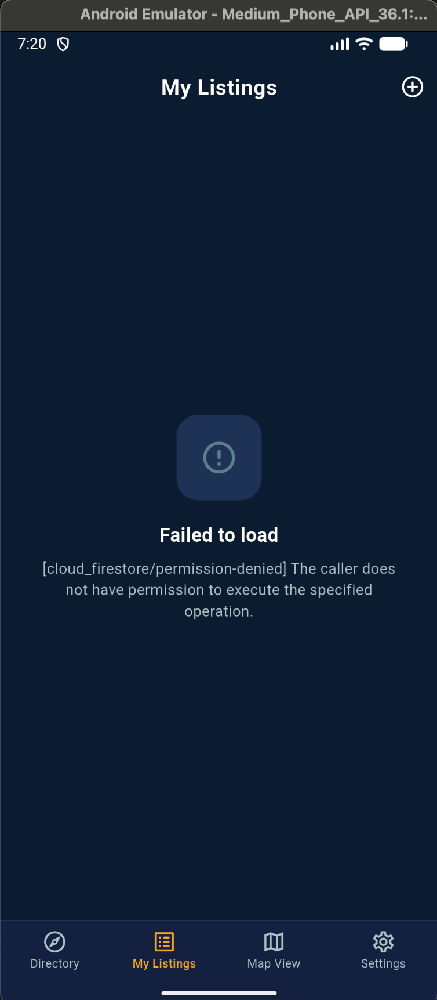
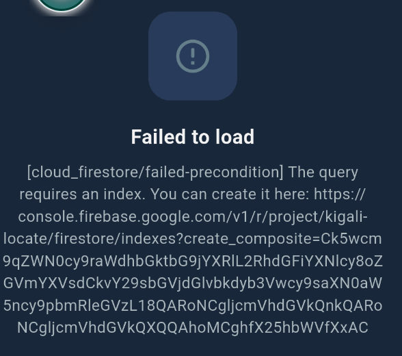

Individual Assignment 2
GitHub: https://github.com/Ebi-Tech/kigali_locate
Demo Video: https://youtu.be/lZVCudjab7o
Integrating Firebase into a Flutter application introduced backend complexity that went well beyond typical frontend development. This reflection covers three key challenges encountered during authentication and Firestore integration, the symptoms observed in each case, and how each was diagnosed and resolved.
The assignment specifies an embedded Google Map for the detail and map view screens. During development, integrating the google_maps_flutter package was evaluated but not pursued for the following reasons:
Google Maps Platform requires a billing account to be activated on Google Cloud Console — a credit or debit card must be on file — before an API key can be used, even within the free monthly usage tier. For the scope of this academic project, enabling billing on a personal account purely to satisfy a library requirement was not a justifiable risk.
Instead, flutter_map with OpenStreetMap tiles was used. This library is fully open-source, requires no API key, no billing account, and no registration of any kind. It renders tile-based maps identically to Google Maps in terms of the core requirement: displaying a map, placing coordinate-based markers from Firestore data, and supporting tap interactions. The navigation feature still launches Google Maps for turn-by-turn directions via the url_launcher package — so the Google Maps integration is present where it matters most to the user. The embedded map view uses OpenStreetMap solely as a free, friction-free alternative that fulfils the same functional requirement without introducing account or billing barriers.
After wiring up the Firestore listings streams, every screen that loaded data — Directory, My Listings, and Map View — either froze on a loading spinner or displayed a "Failed to load" error. The My Listings screen showed the error below.

Figure 1 — [cloud_firestore/permission-denied] error displayed on the My Listings screen
The error [cloud_firestore/permission-denied] The caller does not have permission to execute the specified operation was thrown by every Firestore read and write attempt. The root cause was that Cloud Firestore is created with locked-down default rules that deny all access until explicitly configured.
The Firestore security rules were updated in the Firebase Console to permit public reads on listings and reviews, and authenticated writes scoped to the user's own data:
rules_version = '2';
service cloud.firestore {
match /databases/{database}/documents {
match /listings/{listingId} {
allow read: if true;
allow write: if request.auth != null;
}
match /reviews/{reviewId} {
allow read: if true;
allow write: if request.auth != null;
}
match /users/{userId} {
allow read, write: if request.auth != null
&& request.auth.uid == userId;
}
}
}
Publishing these rules immediately resolved all data access errors across every screen.
The My Listings screen queries Firestore for listings belonging to the current user, sorted by creation date. At runtime this query failed with the error shown below.

Figure 2 — [cloud_firestore/failed-precondition] error requiring a composite index
Firestore requires a composite index whenever a query combines a where() filter on one field with an orderBy() on a different field. This requirement is not enforced at compile time and only surfaces at runtime, making it a non-obvious integration constraint.
Rather than creating a composite index in the Firebase Console, the orderBy clause was removed from the Firestore query and the sorting was moved to the client side in Dart:
Stream<List<ListingModel>> getUserListingsStream(String uid) {
return _firestore
.collection('listings')
.where('createdBy', isEqualTo: uid)
.snapshots()
.map((snapshot) {
final listings = snapshot.docs
.map((doc) => ListingModel.fromFirestore(doc))
.toList();
listings.sort((a, b) => b.createdAt.compareTo(a.createdAt));
return listings;
});
}
This eliminated the composite index requirement while preserving identical sort behaviour, and the My Listings screen loaded correctly afterwards.
During signup, Firebase Authentication successfully created the account and sent the verification email, but the app showed an error snackbar instead of navigating to the verify email screen. The account existed in Firebase Auth, yet the user remained stuck on the signup form.
The signUp() method in AuthService wrote the user profile to Firestore immediately after creating the account. Because Firestore rules were not yet configured at this stage, the write threw a PERMISSION_DENIED exception. Since the Firestore write was not wrapped in its own error handler, the exception propagated up through AuthNotifier, causing it to return false and display an error — even though Firebase Auth had already succeeded.
// Before fix — Firestore exception propagated and broke the auth flow final credential = await _auth.createUserWithEmailAndPassword(...); await credential.user?.sendEmailVerification(); await _firestoreService.createUserProfile(profile); // threw PERMISSION_DENIED return credential; // never reached
The Firestore profile creation was isolated in its own try/catch block, making it non-blocking. Authentication success no longer depends on whether the Firestore write succeeds:
// After fix — Firestore failure is isolated, auth flow always completes
await credential.user?.sendEmailVerification();
try {
await _firestoreService.createUserProfile(profile);
} catch (e) {
debugPrint('Warning: Failed to create Firestore user profile: $e');
}
return credential; // always reached on successful auth
After this change, the user was correctly routed to the VerifyEmailScreen on every signup, regardless of the state of Firestore security rules.
| Challenge | Area | Resolution |
|---|---|---|
| Security rules denying all reads and writes | Firestore | Updated rules to allow authenticated reads/writes per collection |
| Composite index required at runtime | Firestore | Removed orderBy from query; sorted client-side in Dart |
| Firestore exception breaking the signup auth flow | Authentication | Isolated profile write in a separate try/catch block |
GitHub Repository: https://github.com/Ebi-Tech/kigali_locate
Demo Video: https://youtu.be/lZVCudjab7o